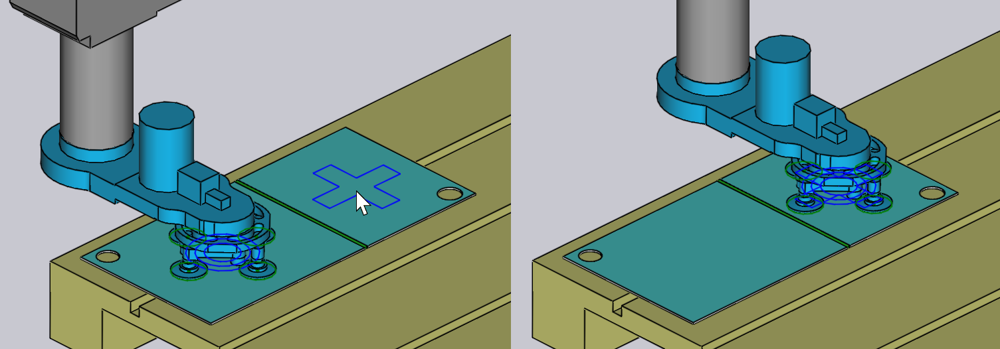

Paletten Alma
Bir vakumlu emici veya manyetik kavrayıcı kullanıldığında, ham saclar (düz parçalar) bir paletten alınır. Bu prosesi şu parametreler etkiler:
-
Paletin makine hücresindeki pozisyonu.
-
Parça istifinin palet üzerindeki pozisyonu ve yönü.
-
Vakumlu kavrayıcının parça üzerindeki pozisyonu ve yönü.
-
Kavrayıcının emici konfigürasyonu (hangi emiciler açılır/kapatılır ve her sokete hangi tipte emiciler monte edilir).
-
Robottaki kamera tarafından görüntülenen ve parçanın pozisyonunu kalibre etmek için referans amaçlı kullanılan parça alanları.
Tüm bu ayarları düzenlemek için kullanılan paneller aşağıda gösterilmiştir - bunların hepsi birbirine, mantıklı bir sırayla diğer panellere yönlendirme sağlayan yukarı/aşağı gezinme bağlantıları ile bağlantılandırılmış durumdadır:

Yukarıdaki resimde gösterildiği üzere, simülasyondaki farklı nesnelere tıklayarak da bu panellere kolayca ulaşılabilir:
-
Palet panelini açmak için, bir palete tıklayın.
-
Bir palet üzerindeki parça istifini (Parça Alma paneli) düzenlemek için, palet üzerindeki ham saclara tıklayın.
-
Ham sac üzerindeki kavrayıcı pozisyonunu düzenlemek için (Kavrayıcı paneli) kavrayıcıya tıklayın.
-
Bir kavrayıcının emici konfigürasyonunu (Emme sistemi paneli) düzenlemek için, emicilerden birine tıklayın.
-
Görüntüleme pozisyonlarını (hassas konum algılama sistemi tarafından kullanılır) düzenlemek için kameraya tıklayın.
Palet Paneli
Palet paneli, bir palet seçmek ve hücreye konumlandırmak için kullanılır. Bu paneli bir palete tıklayarak açabilirsiniz; Flux ayrıca simülasyon zaman çizelgesini, robot parçayı paletten aldığı noktada pozisyonlanacak şekilde ayarlar.

-
Farklı bir palet seçmek için Name seçeneğini kullanın. Normalde, yalnızca bu ham sac için kullanılabilecek olan paletler listelenir; ancak Filtered kontrolünü kapatabilirsiniz, bunun ardından kullanılabilir tüm paletler listelenir.
-
Fareyi ad listesindeki bir adın üzerine getirdiğinizde, ilgili paletin hızlı bir özeti ve küçük resmi görüntülenir:

-
Paleti Z ve X üzerinde (hücre koordinatlarında) pozisyonlamak için, Position girişlerini kullanın ve paleti döndürmek için de Angle girişini kullanın
-
Paleti hareket ettirdiğinizde veya döndürdüğünüzde, palet üzerindeki parça istifi ve kavrayıcı/robot da ilgili hareketi takip eder.
-
-
Next ve Prev düğmeleri ile, örneğin parça bırakma faaliyetlerinin olduğu palet gibi hücredeki diğer paletlere geçebilirsiniz.
-
Palet üzerindeki parça istifinin pozisyonunu düzenlemek için, navigasyon Pickup gezinti düğmesini kullanın.
-
Advanced bölümünün altındaki Save Config düğmesini kullanarak bu hücre konfigürasyonunu (tüm paletler dahil olarak) bu makine için varsayılan olarak kaydedebilirsiniz.
Parça Alma Paneli
Parça Alma paneli, palet üzerindeki parça istifinin pozisyonunu düzenlemek amacıyla kullanılır. Bu paneli, palet üzerindeki ham sac istifine tıklayarak doğrudan açabilirsiniz. (Palet panelindeki Pickup bağlantısını kullanarak da erişebilirsiniz).

-
Position girişlerini kullanarak istifi palet üzerinde konumlandırın; bu koordinatlar, parçanın Z ve X eksenlerindeki palet köşesine göre merkezini gösterir ve paletin yerel koordinat uzayında yerleşik bulunur.
-
Angle girişini kullanarak parçayı palet üzerinde döndürebilirsiniz.
-
Flip part anahtarını kullanarak parçayı ters çevirebilirsiniz. Bu genelde, ilk bükümün işlenebilmesi için ilave bir kavrama faaliyeti gerekeceği anlamına gelir (bu TecZone Bend tarafından otomatik olarak eklenecektir).
-
Kamera paneline geçmek için Camera bağlantısını kullanın; buradan parça alma için görüntü tanıma fazının kurulumunu yapabilirsiniz.
-
Waypoints bağlantısı, parça alma sırasında robotun hareket yolu için hassas ayar yapabileceğiniz Geçiş Noktaları editörünü açar.
-
RG-Stations bağlantısı, parça alma faaliyetinde kavrama istasyonunun pozisyonunu konfigüre edebileceğiniz Kavrama İstasyonu panelini açar.
Parça, palet üzerinde hareket ettirilirken, kavrayıcı parçaya yapışık durumda kalır ve robot da hareketleri takip eder.
Kavrayıcı Paneli
Kavrayıcı paneli, farklı bir kavrayıcı seçmek veya kavrayıcının parçayı aldığı pozisyonu ve yönü değiştirmek amacıyla kullanılır.

-
Farklı bir kavrayıcı seçmek için Name seçeneğini kullanın. Normalde, yalnızca bu parçaya uygun olan kavrayıcılar gösterilir (kavrayıcı ölçüsü ve yük kapasitesi temel alınır); ancak Filtered kontrolünü kapatabilirsiniz ve bunun ardından da tüm kavrayıcılar listelenir.
-
Fareyi kavrayıcı listesindeki bir adın üzerine getirdiğinizde, ilgili kavrayıcının hızlı bir özeti ve küçük resmi görüntülenir:

-
Position girişlerini kullanarak kavrayıcı merkezini parça merkezine göre hareket ettirin ve Angle girişi yardımıyla kavrayıcıları parçanın mevcut yönüne göre döndürün.
-
Kavrayıcının ince ayarlarına geçmek için, Suction bağlantısını kullanın (farklı emicileri seçme, emicileri açma/kapama).
-
Set Grip Plane düğmesi, kavrayıcıyı farklı bir düzlemde pozisyonlamak için kullanılabilir. Normalde, kavrayıcıyı pozisyonlamak için, modeldeki en büyük düzlem kullanılır. Bunu değiştirmek istiyorsanız, bu düğmeye tıklayın. Ardından, kavrayıcının konumlandırılması gereken düzleme tıklayın:
 -
Use Jaw Gripper düğmesi, bu parçayı parça dağıtıcı ve çeneli kavrayıcı (mekanik kavrayıcı) kullanımına geçirmek amacıyla kullanılır. Parça almadan parça bırakmaya kadar büküm çevriminin tüm aşamaları, çene kullanılarak tekrar hesaplanır. gripper[1].
Emme Sistemi Uyarıları
Kavrayıcı eğer bazı emiciler katmanın dışında kalacak veya parçadaki deliklere gelecek şekilde hareket ettirilirse, emiciler vurgulanır ve aşağıdaki gösterildiği gibi, gezici öğesindeki Parça Alma sütununda bir hata görüntülenir:

Eylemler Menüsü

Eylemler düğmesi, kavrayıcıda bazı faydalı eylemleri mümkün kılan bir menüyü çağırmak amacıyla kullanılır:
-
Auto-place: Shift: Kavrayıcıyı parçada yeniden konumlandırmaya çalışır ve tüm emicilerin parçanın içinde ve deliklerde olmamasını (mümkünse) sağlar.
-
Turn off leaking cups: Deliklerde bulunan veya sınırların dışında kalan tüm emicileri kapatır. part[2].
-
Turn on all cups: Kapalı durumdaki tüm emicileri açar.
-
Save Config: Eğer bazı emicileri kapatarak veya çıkararak ya da kol uzunluklarını veya açılarını değiştirerek (şekil değiştirebilen MultiGripper’lar için) kavrayıcıyı konfigüre ederseniz, gelecekte kolayca yeniden kullanabilmek için kavrayıcının değiştirilen konfigürasyonunu yeni bir adla kaydedebilirsiniz.
-
Export Gripper: Mevcut kavrayıcıyı TecZone Bend için başka bir kuruluma aktarılabilecek bir .fxbgrip dosyası olarak kaydedin. Bu seçenek, eğer özel bir kavrayıcıyı içe aktardıysanız ve bunu diğer kurulumlarla paylaşmanız gerekiyorsa faydalıdır.
Emme Sistemi Paneli
Emme sistemi paneli, bir kavrayıcının vakum atama şemasını konfigüre etmek amacıyla kullanılır. Bu paneli, bir emiciye doğrudan tıklayarak veya kavrayıcı panelinden Emme sistemi bağlantısını seçerek açabilirsiniz.

-
Kavrayıcıdaki belirli bir emiciyi seçmek için Cup # seçeneğini kullanın veya emiciler arasında gezinmek için Next ve Prev düğmelerini kullanın. Seçilen emici mavi renkle vurgulanır ve düzenlenebilir.
-
Her emici için State öğesini Açık, Kapalı veya Çıkarıldı olarak ayarlayabilirsiniz.Bununla ilgili ayrıntılar için aşağıdaki açıklamaya bakın.
-
Farklı bir emici tipine geçmek için Type panelini kullanın. Genel olarak, bir kavrayıcıdaki tüm emiciler yeni tipe değiştirilir; ancak Change All düğmesini kapatıp emicileri değiştirerek, farklı emicileri birbiriyle karıştırabilir ve eşleştirebilirsiniz. (Not: Bunu yaptığınızda, kavrayıcı çerçevesine takılan tüm emicilerin çalışma yüksekliğinin aynı olması gerektiği için, emici seçimi kısıtlanacaktır). Yukarıdaki resimde iki emici, daha küçük olanlarla değiştirilmiş durumdadır (varsayılan SAXM80 yerine SAXM50).
-
Kavrayıcıyı asıl durumuna geri döndürmek için Reset düğmesini kullanın: Tüm emiciler açılır ve kavrayıcıda tanımlanmış olan varsayılan emici tipine sıfırlanır.
Bir emici için varsayılan durum, Açık olup bu da emicilerin kaldırmaya yardımcı olacak şekilde vakum hattına bağlı olduğunu gösterir.
Emici eğer parçadaki bir deliğin üzerinde ise, durumu Kapalı olarak değiştirebilirsiniz; bu da vakum bulunmadığı anlamına gelir. (Bu da kavrayıcının kaldırma gücünü düşürür ve kaldırma merkezini değiştirir; Flux, kavrayıcı kapasite kontrolleri sırasında bu durumu dikkate alır). Emicinin hala çerçeveye takılı durumda olduğunu ve çarpışma kontrollerine dahil edildiğini dikkate alın. Yukarıdaki görüntüde iki emici üzerinde görebileceğiniz üzere Flux, kapalı durumdaki emicileri tel kafes şeklinde gösterir.
Son olarak, emiciyi Çıkarıldı olarak ayarlayabilirsiniz; bu da emicinin asıl makinedeki çerçeveden çıkarıldığı anlamına gelir. Bu emici kaldırma uygulamaz ve çarpışmaya yol açmaz. Bu, bir emicinin işletim sırasında bir bölgenin üzerine düşmesi veya dişi takımla veya makine tablasıyla çarpışması durumları için bazen faydalıdır.
Kamera Paneli
Parça alma prosesi, kamera tarafından bir veya daha fazla görüntünün yakalanmasını ve bu görüntüler aracılığıyla parçanın paletteki tam konumunu tahmin eden bir görüntü işleme sistemini gerektirir. Robota monte edilmiş kameraya tıklandığında veya Parça Alma panelinden Kamera gezinti düğmesi seçildiğinde, Kamera paneli açılacaktır. Flux ayrıca simülasyonu, robot ilgili görüntüyü yakalamak için gerekli pozisyonda bulunacak şekilde pozisyonlandırır:

-
Bu parça için kullanılan farklı hassas algılama görüntülerini görmek için Index listesini (veya Next ve Prev düğmelerini) kullanın. Bunu yapıyorken Flux, parçanın üzerindeki görüntü algılama alanını gösteren turuncu bir çerçeve gösterir (yukarıdaki resme bakın).
-
Position girişlerini kullanarak bu bölgeyi Z ve X eksenlerinde yeniden pozisyonlayın ve bu şekilde, algılama doğruluğunu artırabilecek belirli önemli özellikleri (köşeler, küçük delikler, çentikler) daha iyi dahil edin.
-
Add düğmesini kullanarak ek bir algılama görüntüsü ekleyebilir (4 adede kadar) ve Remove düğmesini kullanarak mevcut algılama görüntüsünü silebilirsiniz. Parça alma simülasyonu esnasında Flux, robotun kamerayı aşağı indirerek bu algılama alanlarının her birine hareket ettiğini ve görüntü almak üzere durakladığını gösterir.
Eğer Use backlight table anahtarı açıksa, parça kamera tarafından görüntülenmeden önce aydınlatılmış bir tablaya aktarılır. Bu, kontrastı artırır ve yüksek derecede yansıtıcı parçalar için kullanışlıdır. TecZone Bend arka aydınlatma tablasını ekler ve otomatik olarak parça alma paletinin yakınına yerleştirir, ancak ardından üzerine tıklayarak pozisyonunu konfigüre edebilirsiniz: